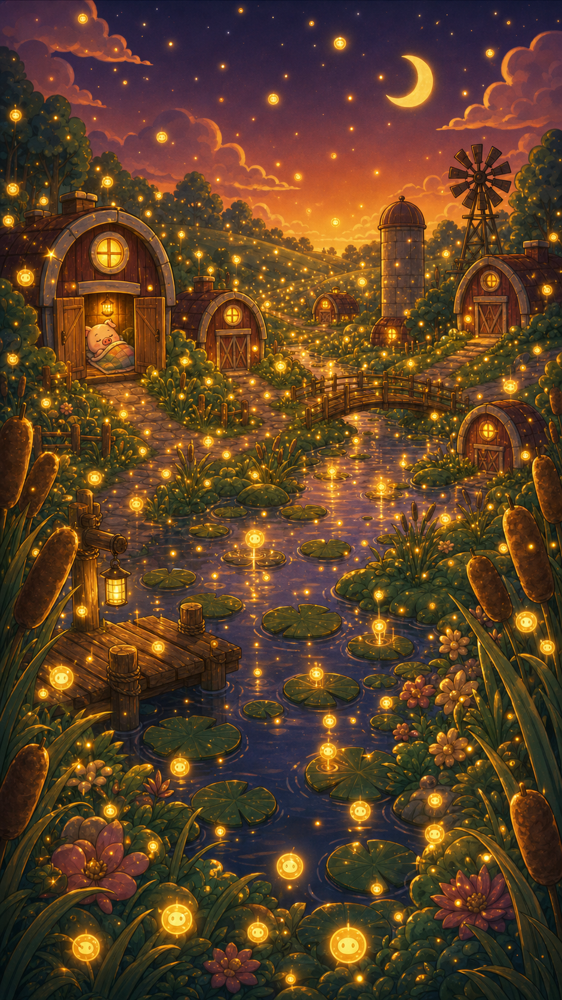
Story Slideshow
pensive narration pass for the Season 2 opening
30.8s
8 shots
generated panels
ends down
Storyboard Board
current generated panel set in story order
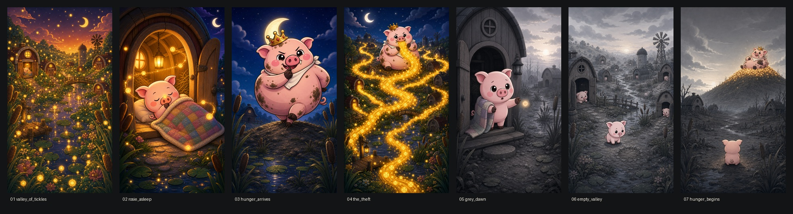
01valley
02asleep
03arrival
04theft
05grey dawn
06empty
07begins
Download CTA Examples
end-card directions using the real app icon and the sad valley background
4 options
current cut uses 01
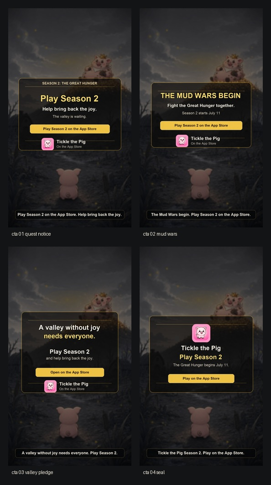
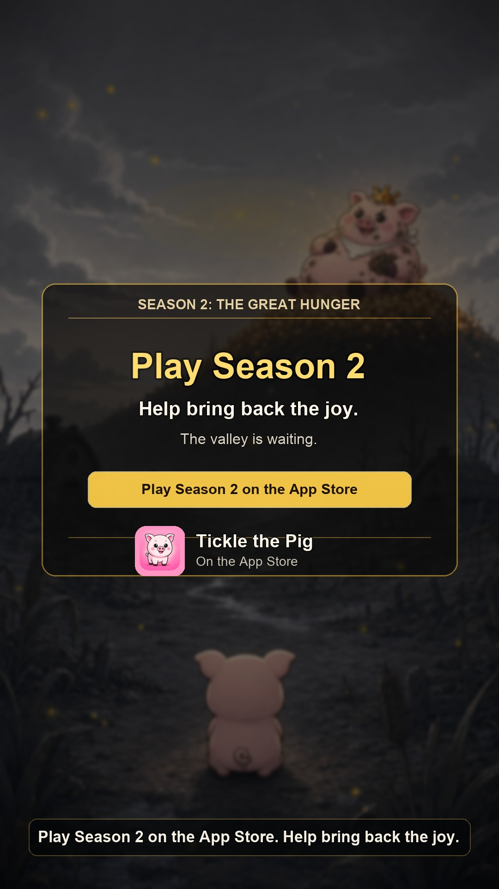
01quest notice
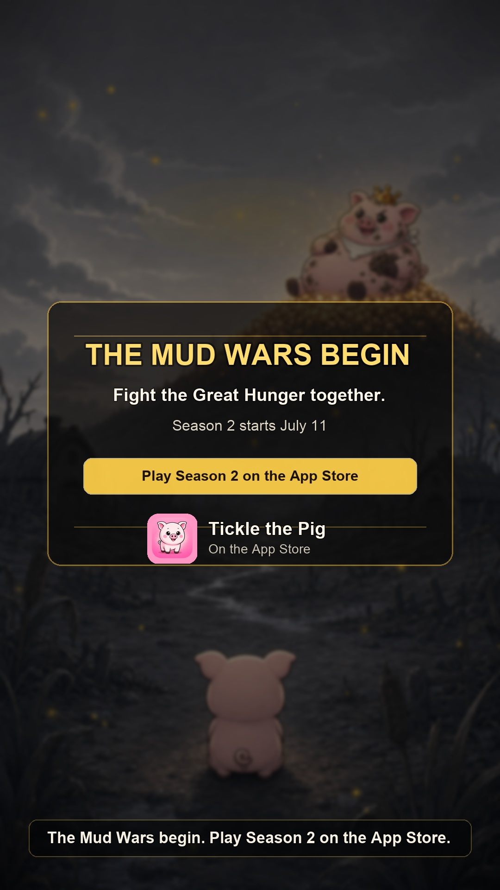
02mud wars
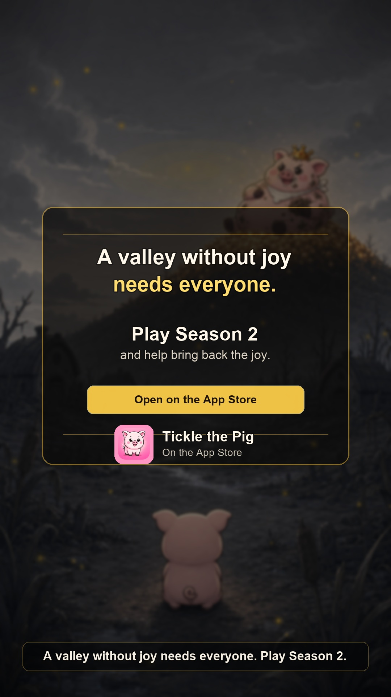
03valley pledge
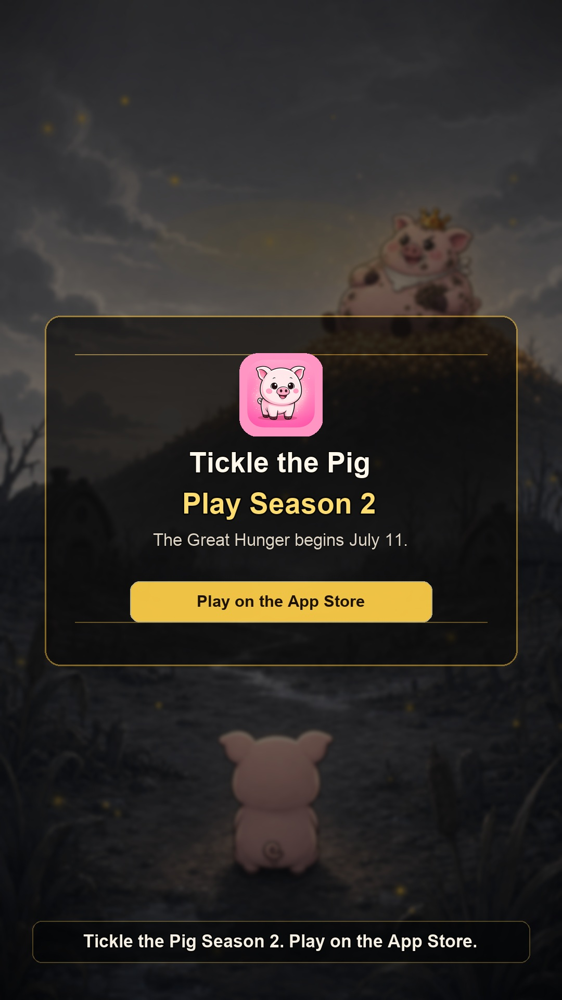
04seal
Rosie
idle, happy, sad, surprise, tired, jump, walk, wave
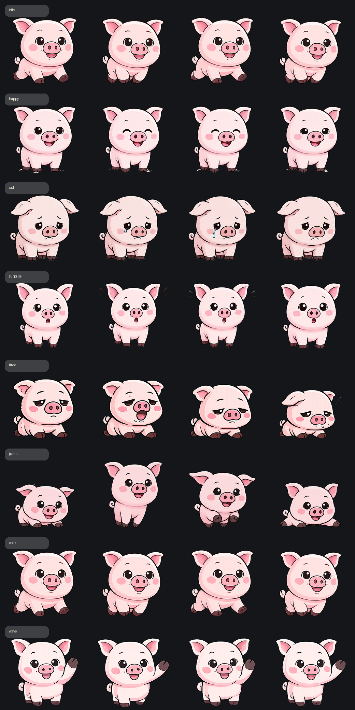
review sheet8 x 4
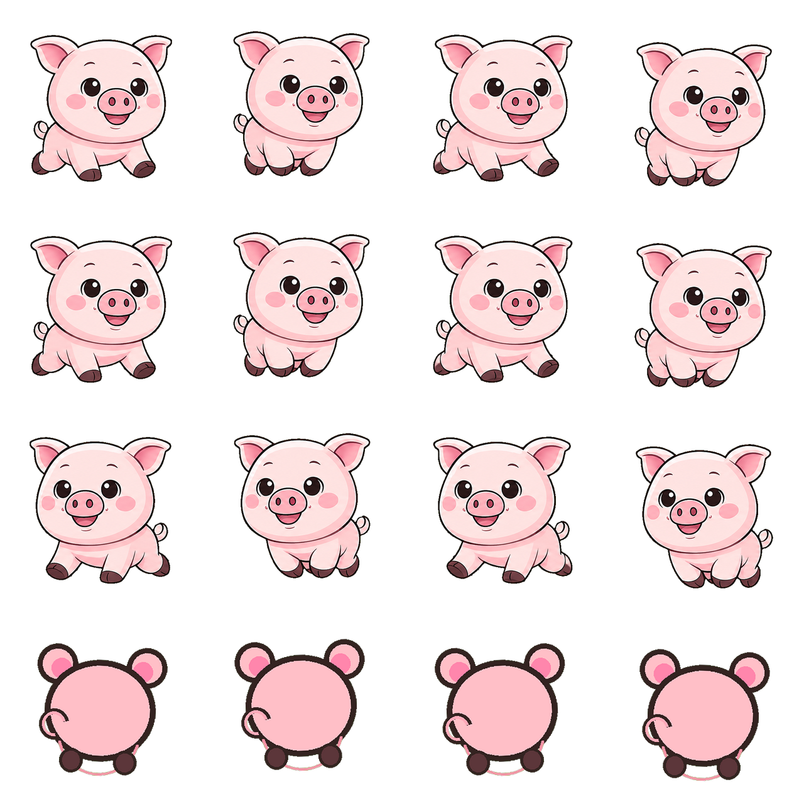
turnaroundtransparent PNG
The Hunger
meaner crowned-hog reference and rough action loops; no rear turnaround in use
v2 meaner
turnaround rejected
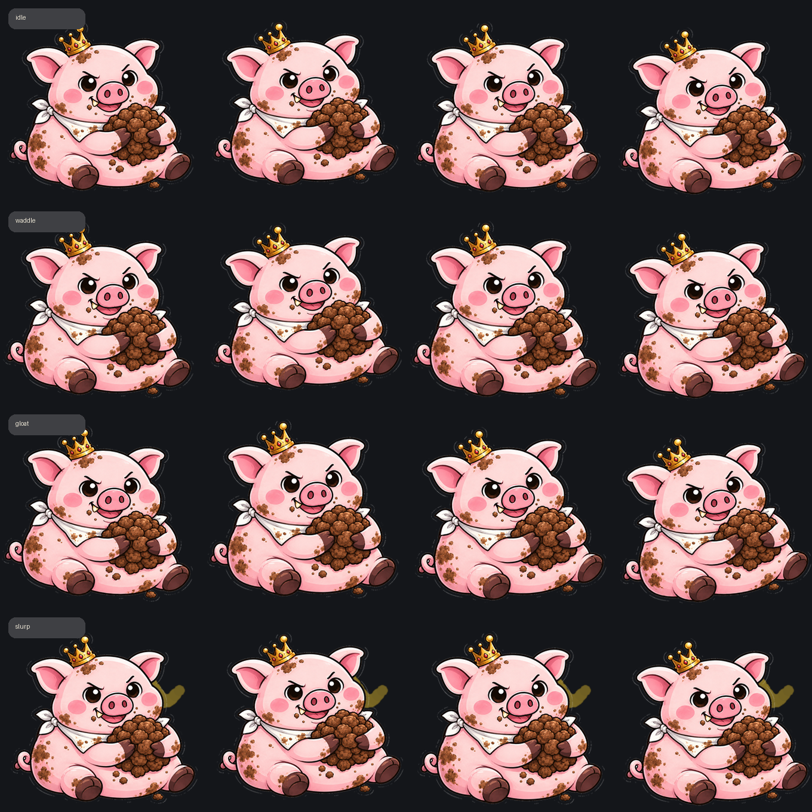
action sheetidle, waddle, gloat, slurp
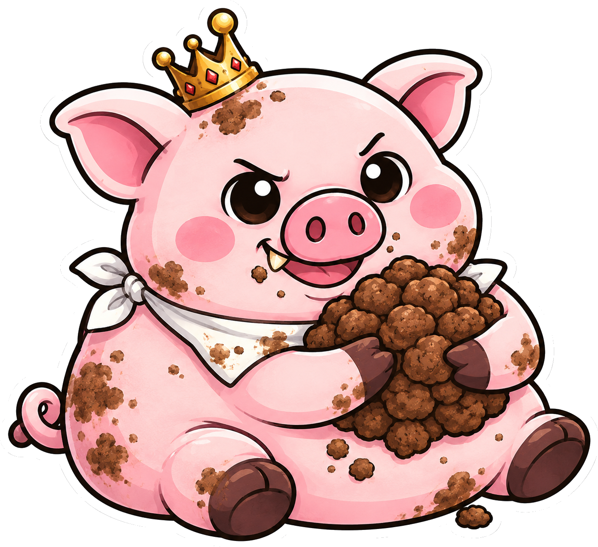
identity referenceuse for Higgsfield/video generation
Animated Previews
looping GIF exports
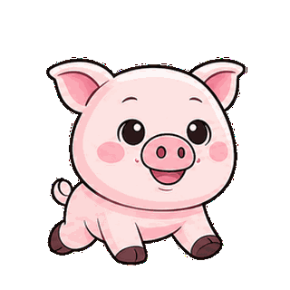
Rosieidle
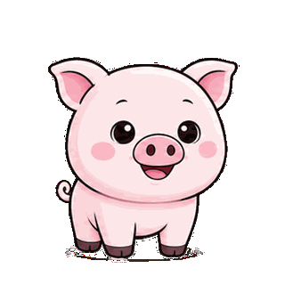
Rosiehappy
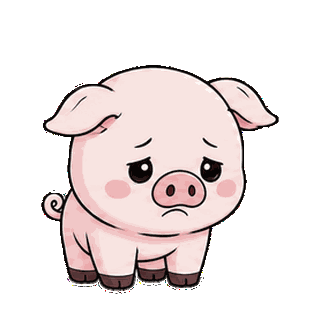
Rosiesad
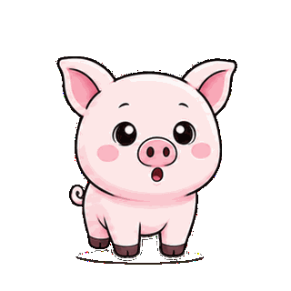
Rosiesurprise
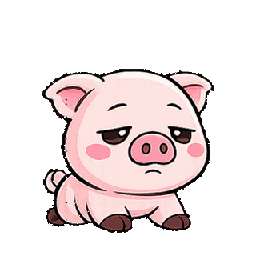
Rosietired
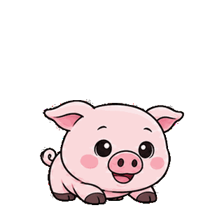
Rosiejump

Rosiewalk
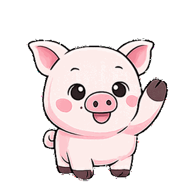
Rosiewave
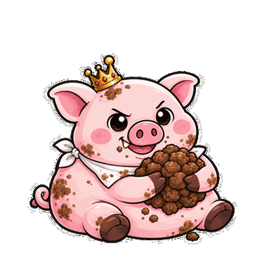
Hungeridle
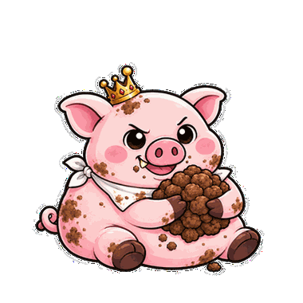
Hungerwaddle
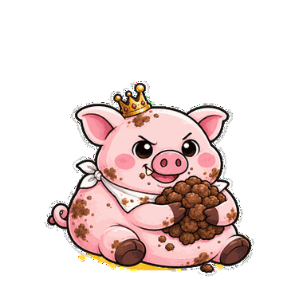
Hungergloat
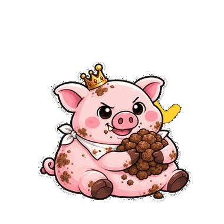
Hungerslurp
Files
source anchors and generated packs
Rosie sourceassets/images/sprites/rosie
Hunger sourcegreat_hunger_mean_reference_cutout_v2.png
Narrationdocs/great-hunger-opening-script.md
Story MP4assets/concepts/great-hungerer/video/great_hunger_generated_panels_animated_v2.mp4
Video manifestassets/concepts/great-hungerer/generated_panel_video_manifest_v1.md
Generated panelsassets/concepts/great-hungerer/generated_panels
Spritesassets/concepts/great-hungerer/sprites